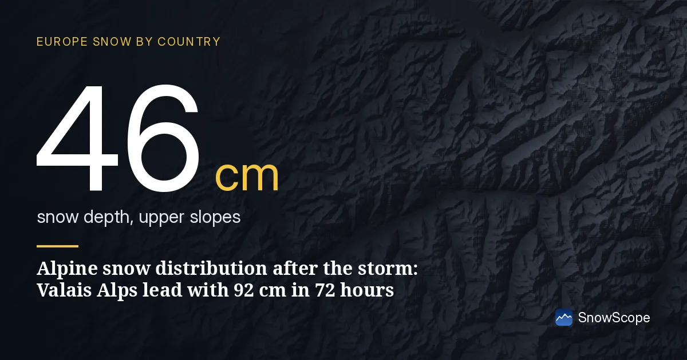
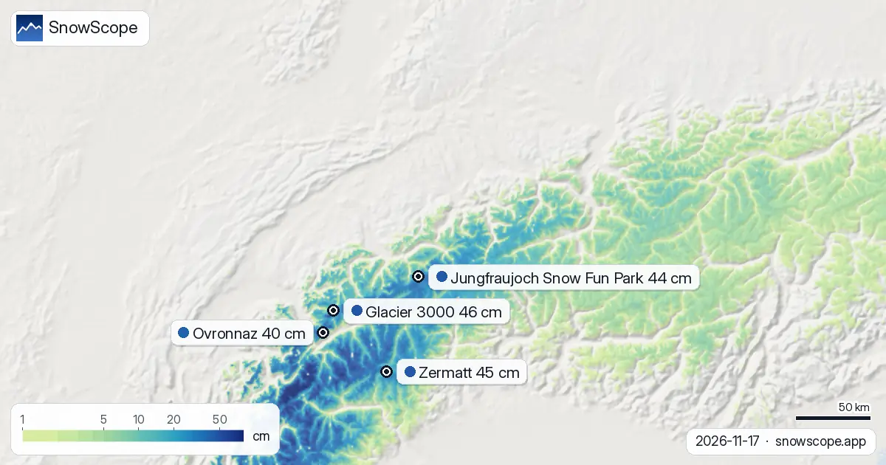

Distribution alpine de la neige après la tempête : les Alpes valaisannes en tête avec 92 cm en 72 heures
Une tempête a redessiné la carte nivale de la Suisse. Les Alpes valaisannes ont capté les précipitations les plus importantes, accumulant 92 cm sur trois jours, tandis que l'Oberland bernois a reçu 54 cm—un schéma façonné par l'exposition des montagnes au système météorologique entrant.
Consultez les prévisions neige en temps réel pour Glacier 3000 sur l'application SnowScopeHauteurs de neige, alertes poudreuse et carte 3D, gratuitement.
Où la tempête a délivré le plus : les Alpes valaisannes prennent de l'avance
En travaillant en terrain haute altitude, on apprend rapidement que les tempêtes ne traitent pas tous les massifs de la même manière. Celle-ci a confirmé la règle. Les Alpes valaisannes, situées directement sur le passage de l'air humide en provenance de l'ouest, ont capté 92 cm de neige en 72 heures jusqu'au 17 novembre—nettement plus que n'importe quelle autre zone. L'Oberland bernois, au nord, a enregistré 54 cm, un total respectable mais environ deux fois moins que son voisin du sud.
Cette disparité reflète l'orographie que nous observons sur le terrain : les Alpes valaisannes s'élèvent abruptement et présentent une face large au flux dominant. Glacier 3000, situé au carrefour de ces massifs, a enregistré 67 cm pendant la même période—une preuve de la façon dont la topographie locale canalis et amplifie les précipitations. Le schéma est classique pour les tempêtes suisses : le terrain élevé entre la vallée du Rhône et la frontière capture l'humidité ; les massifs au nord en reçoivent moins.
| Station | Hauteur de neige | Neige fraîche, 72 h | Attendu, jours suivants | Sommet |
|---|---|---|---|---|
| Glacier 3000 | 46 cm | 67 cm | 91 cm | 2 931 m |
| Zermatt | 45 cm | 42 cm | 60 cm | 3 872 m |
| Jungfraujoch Snow Fun Park | 44 cm | 44 cm | 71 cm | 3 461 m |
| Ovronnaz | 40 cm | 54 cm | 78 cm | 2 456 m |
| Saas Grund | 37 cm | 28 cm | 41 cm | 3 142 m |

Accumulation fraîche : 29 cm en 24 heures au pic
La phase la plus intense de la tempête s'est déroulée en une seule impulsion. Entre le 16 et le 17 novembre, la chute maximale sur 24 heures a atteint 29 cm sur le terrain modélisé ; sur 72 heures, les pentes les plus exposées en ont vu 48 cm. Quelque 11 300 kilomètres carrés des Alpes ont reçu au moins 5 cm de neige fraîche en ces trois jours—une zone substantielle, bien que la couverture neigeuse totale ait diminué de 16 510 à 12 830 kilomètres carrés.
Cette apparente contradiction—une neige nouvelle abondante mais une couverture totale en baisse—révèle ce qui se passe début novembre : les précipitations sont tombées sur les crêtes exposées et les cols élevés, mais aux basses altitudes, la pluie a dominé et les minces plaques existantes ont fondu. La ligne de neige se situe actuellement près de 1 700 m ; au-dessous de ce seuil, le nouveau matériau ne persisterai pas.

L'altitude raconte l'histoire : 2 000 m vers le haut, blanc continu
Les bandes d'altitude montrent clairement la frontière entre la neige transitoire et stable. De 500 à 1 500 m, la couverture reste fragmentaire—0 à 5 %. Entre 1 500 et 2 000 m, la neige ne couvre que la moitié du terrain, et les profondeurs moyennes ne sont que de 2 cm ; les rochers et la végétation dominent encore le paysage. Au-dessus de 2 000 m, la continuité commence. La bande de 2 000 à 2 500 m retient maintenant 8 cm en moyenne et 96 % de couverture. Au-dessus de 2 500 m, le tableau est complet : 22 cm de manteau neigeux continu, 100 % de couverture. C'est là que débute le ski fiable en novembre.
Les stations principales : le terrain glaciaire capture l'avantage
Glacier 3000 est maintenant en tête avec 46 cm à sa base, bien que ce chiffre sous-estime les conditions plus haut. Zermatt suit de près avec 45 cm, son altitude élevée (3 872 m au sommet) assurant la préservation de l'accumulation récente. Jungfraujoch Snow Fun Park retient 44 cm à 3 461 m, et Ovronnaz, plus bas à 2 456 m mais favorablement positionné pour capturer le flux d'ouest, se situe à 40 cm. Ce sont des profondeurs de début de saison—la neige reste jeune et peut se tasser—mais elles représentent une base solide. Les cinq stations suivies affichent des conditions supérieures à la normale par rapport à leurs moyennes typiques de novembre.
Après : plus de neige prévue pendant trois jours
La tempête n'a pas terminé. Notre modèle projette jusqu'à 70 cm sur les Alpes dans les trois jours à venir, avec 29 cm arrivant le 20 novembre—la journée la plus enneigée du window de prévisions. En contraste, la semaine suivante montre un ralentissement net : la période du 25 novembre au 1er décembre devrait apporter seulement 40 cm. Les premiers signes de neige fraîche pourraient arriver dès le 18 novembre, avec l'événement principal se déroulant autour du 20.
Tendance et perspectives : la couverture a reculé, mais l'altitude favorise la stabilité
La zone couverte de neige d'hier était de 16 510 kilomètres carrés ; aujourd'hui elle est de 12 830—une perte de 3 680 kilomètres carrés. Sur une base hebdomadaire, cependant, le total a à peine bougé, en baisse seulement de 40 kilomètres carrés depuis le 7 novembre. Cela nous dit que la neige nouvelle reste là où elle compte : au-dessus de 2 000 m. Les basses altitudes continuent de cycles entre neige et fonte. La part blanche de 41 % sur le terrain modélisé est typique pour la mi-novembre. Comme la prochaine impulsion arrive autour du 20, la couverture va à nouveau augmenter, mais sa persistance dépendra de la tendance des températures dans la période qui suit.
Conseils aux skieurs
- Skiez au-dessus de 2 000 m où la neige est continue ; au-dessous de cette altitude, les pistes restent minces et rocheuses par endroits. Consultez les bulletins d'avalanche locaux avant de partir en randonnée dans les Alpes valaisannes, où l'accumulation la plus importante se situe sur un terrain escarpé.
- Attendez-vous à une évolution rapide de la stabilité de la neige au cours des 48 prochaines heures alors que le nouveau matériau se tasse et se lie. L'Oberland bernois et les Alpes valaisannes réagiront différemment au réchauffement ; les pentes plus hautes et plus ombragées du Valais peuvent préserver les couches instables plus longtemps.
- Planifiez la randonnée sur glacier et cols élevés pour le 20 novembre en avant, quand la neige fraîche réinitialisera la visibilité et la couverture. Les conditions au sol sur les pentes basses resteront marginales jusqu'à au moins la mi-décembre.
À propos de ces chiffres
Les hauteurs de neige des stations sont la neige la plus épaisse sur le haut du domaine, d'après le modèle de neige SnowScope (environ 1 km, calcul du 17 novembre) ; ce sont des estimations pour une zone, pas une mesure en un point. Les valeurs des stations de mesure sont mesurées à la date indiquée. Les prévisions peuvent changer. Consultez toujours le bulletin d'avalanche officiel avant le hors-piste.
Citer ce bulletin
Pour la recherche, l'enseignement ou la presse : chiffres et graphiques réutilisables librement sous CC BY 4.0 avec cette citation.
SnowScope (2026), Distribution alpine de la neige après la tempête : les Alpes valaisannes en tête avec 92 cm en 72 heures, https://snowscope.app/blog/fr/2026/11/switzerland-snow-report-17-november-2026.html, consulté le 2026-11-17
SnowScope (Atlas Labs). (2026, November 17). Distribution alpine de la neige après la tempête : les Alpes valaisannes en tête avec 92 cm en 72 heures. SnowScope snow reports. https://snowscope.app/blog/fr/2026/11/switzerland-snow-report-17-november-2026.html
BibTeX
@misc{snowscope2026switzerlandsnowreport17n,
author = {{SnowScope (Atlas Labs)}},
title = {Distribution alpine de la neige après la tempête : les Alpes valaisannes en tête avec 92 cm en 72 heures},
year = {2026},
month = nov,
howpublished = {\url{https://snowscope.app/blog/fr/2026/11/switzerland-snow-report-17-november-2026.html}},
note = {Published 2026-11-17 12:53 UTC; accessed 2026-11-17}
}· CC BY 4.0 · Méthodes, données et outils →
Glacier 3000 : neige et température selon l'altitude, cet hiver vs l'hiver dernier (outils) →
Suivre Glacier 3000
Gratuit : un message quand la neige arrive, et la météo chaque matin.